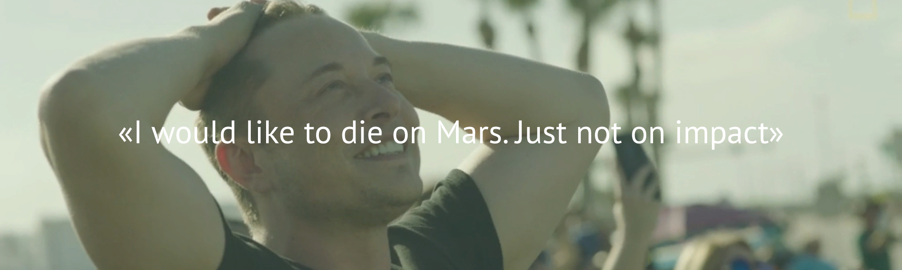

SpaceX
Space Exploration Technologies Corporation
— американская компания, производитель космической техники со штаб-квартирой в городе Хоторн, Калифорния, США.
Основана в 2002 году , с целью сократить расходы на полёты в космос, открывая путь к колонизации Марса. Компания разработала ракеты-носители Falcon 1 и Falcon 9, с самого начала преследуя цель сделать их многоразовыми, и космический корабль Dragon (выводимый на орбиту теми же Falcon 9), предназначенный для пополнения запасов на Международной космической станции. Пассажирская версия корабля Dragon V2 для транспортировки астронавтов на МКС находится в финальной фазе разработки. С 2015 года участвует также в реализации проекта вакуумного поезда Hyperloop.
С целью контроля над качеством и стоимостью, разработка, производство и тестирование большинства компонентов продукции производится с опорой на внутренние ресурсы, включая ракетные двигатели Merlin, Kestrel, Draco и SuperDraco, используемые на ракетах-носителях Falcon и корабле Dragon.
Владельцы
По данным от 2012 года, 2/3 компании принадлежит И. Маску.
Около 10 % компании принадлежит корпорациям Google и Fidelity Ventures. В число владельцев также входят Draper Fisher Jurvetson, Founders Fund, Valor Equity Partners, Capricorn и др.
Влияние на космическую индустрию
В 2013 году предложение SpaceX с ценой $56,5 млн за один запуск ракеты-носителя стало самым дешёвым в космической индустрии.
В 2014 году 9 из 20 новых договоров на коммерческие запуски спутников пришлось на SpaceX.
В связи с усилением SpaceX американская компания United Launch Alliance (производит ракеты Атлас и Дельта) объявила о масштабной реструктуризации, целью которой объявлено снижение стоимости запуска в два раза. В мае 2015 года компания объявила об угрозе банкротства, в случае если не сможет бороться за коммерческие контракты в условиях снижения количества государственных военных заказов.
Японская компания Mitsubishi Heavy Industries (производит ракеты H-II) также объявила о планах по снижению стоимости запуска в два раза.
Китайская компания China Great Wall Industry Corp (производит ракеты «Чанчжэн») объявила, что не намерена снижать цены, несмотря на давление со стороны SpaceX (до появления SpaceX компания была монополистом в сегменте низкобюджетных запусков).
Руководитель европейской компании Arianespace (производит ракеты Ариан) заявил, что из-за давления SpaceX реструктуризируется вся европейская космическая индустрия. Для сохранения своей позиции на рынке компания была вынуждена снизить цены и запросить субсидии у государства. К концу 2014 года SpaceX начала вытеснять компанию с лидирующей позиции на рынке коммерческих запусков.
Дмитрий Рогозин, курирующий ракетно-космическую промышленность России, заявил, что с уважением относится к работе Илона Маска, и призвал сделать запуски российских космических кораблей намного более дешёвыми — так как «конкуренты нам на пятки наступают».
SpaceX
Семейство ракет Falcon
SpaceX успешно разработала и запустила в космос ракету-носитель лёгкого класса Falcon 1, среднего класса Falcon 9 и ракету-носитель тяжёлого класса Falcon Heavy. Первый запуск последней произведён в феврале 2018 года.
Falcon 1
— первая ракета-носитель компании SpaceX. После первых трёх неудачных запусков, ракета-носитель Falcon 1 успешно вывела на орбиту макет полезной нагрузки 28 сентября 2008 года. По словам Илона Маска, окажись этот запуск неудачным, компания SpaceX вряд ли смогла бы продолжить существование.
В связи с ограниченным спросом на ракеты-носители подобного класса было принято решение завершить производство и сосредоточиться на более тяжёлых носителях.
Ракета-носитель Falcon 9
впервые была запущена 4 июня 2010 года.
Falcon 9 v1.0 использовалась с 2010 по 2013 год, все пять запусков успешны.
На замену версии 1.0 пришла усовершенствованная Falcon 9 v1.1, с минимальной стоимостью запуска $61,2 млн.
Популярность в медиасреде получила версия Falcon 9 v1.1 (R), которая является модификацией версии 1.1, оборудованной дополнительными элементами, позволяющими первой ступени осуществлять мягкую управляемую посадку для её повторного использования. Первые две попытки посадки производились на плавающую платформу Autonomous Spaceport Drone Ship, обе (2015) закончились неудачно. Так как два раза первая ступень Falcon 9 успешно попадала в назначенную цель, SpaceX решила произвести третью попытку посадки на землю.
22 декабря 2015 года, после успешного запуска новой версии ракеты-носителя Falcon 9 v1.2, доставившей на орбиту 11 спутников Orbcomm-G2, была произведена первая успешная вертикальная посадка первой ступени ракеты-носителя на площадку Посадочной зоны 1 на мысе Канаверал.
8 апреля 2016 года состоялась первая успешная посадка на плавающую платформу «Of Course I Still Love You» спустя 8,5 минут после запуска.
1 сентября 2016 ракета-носитель Falcon 9 взорвалась на стартовой площадке комплекса SLC-40 на мысе Канаверал, во время заправки топливом перед испытательными статическим прожигом первой ступени. Запуск был запланирован на 3 сентября. Вместе с ракетой потерян израильский спутник связи Amos-6.
31 марта 2017 года осуществлён первый повторный запуск первой ступени Falcon 9 в ходе миссии по выводу спутника SES-10.
Falcon Heavy
заявлена самой мощной действующей ракетой в мире на момент запуска. Первый полёт выполнен 6 февраля 2018 года.
Dragon
— частный транспортный космический корабль (КК) компании SpaceX. Разработан по заказу NASA в рамках программы Commercial Orbital Transportation Services (COTS) и предназначен для доставки и возвращения полезного груза и, в перспективе, людей на Международную Космическую Станцию. Выводится в космос ракетой-носителем Falcon 9.
Грузовая версия корабля используется для снабжения Международной космической станции в рамках программы NASA Commercial Resupply Services (CRS) (букв. рус. Коммерческие услуги снабжения).
Dragon — единственный ныне действующий грузовой корабль, который может возвратить груз из космоса.
3 июня 2017 года, в рамках миссии SpaceX CRS-11, корабль впервые был запущен с повторно используемой спускаемой капсулой, ранее вернувшейся после миссии SpaceX CRS-4. Основные структурные компоненты капсулы были оставлены прежними, отдельные элементы (в том числе тепловой щит), пострадавшие от солёной воды, были заменены новыми. Спустя месяц, 5 июля 2017 года, корабль успешно вернулся на Землю.
Dragon V2
30 мая 2014 года SpaceX представила новую версию корабля — Dragon V2, многоразовый пилотируемый космический корабль. Может перевозить до семи астронавтов на МКС. Уникальность этого корабля — это возможность осуществлять управляемую посадку на Землю с помощью встроенных двигателей SuperDraco с точностью вертолёта; имеется запасная парашютная система. Разработан по заказу NASA в рамках программы Commercial Crew Development (CCDev).
Марса
Колонизация марса
Основатель космической компании SpaceX Илон Маск представил во вторник, 27 сентября, план пилотируемого полета и заселения Марса. Маск утверждает, что первых людей к Марсу можно будет отправить уже в 2024 году, но пока его план далек от реализации — у SpaceX нет ни ракеты, ни космического корабля, способного за 80 дней доставить 100-200 человек к четвертой планете от Солнца. «Медуза» рассказывает, что известно о плане Маска — и с какими проблемами придется столкнуться SpaceX.
На марс за 80 дней
Путешествие к Марсу, по замыслу инженеров SpaceX и основателя компании Илона Маска, будет выглядет так. Многоразовая ракета сперва доставит на земную орбиту космический корабль с людьми и багажом, но без топлива. Затем та же самая ракета приземлится на площадку SpaceX на мысе Канаверал в США, дозаправится и с грузом топлива вылетит обратно к марсианскому кораблю на орбиту; и так несколько раз — до тех пор, пока горючего на борту корабля не будет достаточно для путешествия. Такая схема позволит существенно снизить стоимость путешествия к Марсу: поднять космический корабль и с людьми, и с топливом для многомесячного перелета если и получится в ближайшее время, то при других мощностях и затратах. Предполагается, что SpaceX сможет использовать ракету до тысячи раз. Она, как и космический корабль для путешествия к Марсу, будет оснащена двигателями Raptor (работают на метане) — первые испытания «Раптора» SpaceX уже провела.
Heart of Gold
В космический корабль (Маск хочет назвать его «Heart of Gold») поместятся до ста с лишним человек. Высота корабля составит около 50 метров, диаметр — 17 метров, полет на нем к Марсу займет от 80 до 150 дней. Маск утверждает, что путешествие на Марс окажется приятным: в полете можно поесть в ресторане и насладиться нулевой гравитацией. Космический корабль, как и ракета, должен быть многоразовым; то есть после прилета на Марс и дозаправки на нем можно вернуться на Землю. Первая станция для добычи топлива на Марсе должна прибыть туда вместе с первым космическим кораблем. Возвращаемость — ключевой момент в идее Маска; иначе Марс превратится в кладбище ракет.
Для создания устойчивой колонии
на Марсе потребуются около миллиона человек — это примерно десять тысяч рейсов туда-обратно как минимум за 40 лет. При этом первые покорители Марса явно не смогут быстро (а возможно, и вообще никогда) вернуться на Землю. Маск признается, что первые путешествия на Марс могут быть чрезвычайно опасными для колонистов. «Вы готовы умереть? Если с этим проблем нет, вы отличный кандидат », — сказал он, представляя марсианский план в Мехико.
Как именно будет устроена жить поселенцев на Марсе — и что SpaceX предлагает сделать для улучшения тяжелых условий жизни на планете, атмосфера которой не пригодна для дыхания, Маск не рассказал — не считая теоретических разговоров о нагревании небесного тела термоядерными взрывами.
Еще одна важнейшая проблема плана SpaceX — это деньги. Сейчас Маск оценивает стоимость путешествия к Марсу в 10 миллиардов долларов на одного человека; реальная колонизация возможна только при снижении стоимости перелета до 200 тысяч долларов — иначе, очевидно, не будет никакого спроса. Неясно также, откуда Маск собирается брать деньги и на разработку космического корабля и новой ракеты-носителя.
Hyper
Результаты моделирования
Проведённое в сентябре 2013 года работниками Ansys компьютерное моделирование показало, что идея осуществима, однако нуждается в доработке. Необходимы корректировки следующего рода:
Форму капсулы нужно сделать более обтекаемой;
Требуется бороться с нагревом оболочки капсулы;
Следует предотвратить вращение капсулы вокруг продольной оси
В ноябре того же года в своём блоге на сайте компании The MathWorks Гай Руло (англ. Guy Rouleau) поделился результатами собственного моделирования, которое показало, что по условиям трассы между Лос-Анджелесом и Сан-Франциско скорость 1220 км/ч будет недостижима.
В январе 2015 года на ежегодной конференции Американского института аэронавтики и астронавтики специалисты NASA Glenn Research Center представили свои результаты моделирования, выполненного в открытой программной среде OpenMDAO. Ключевыми их выводами стало то, что диаметр трубы надо увеличить примерно в 2 раза, а опасение нагрева капсулы из-за трения воздуха является преувеличенным. Материалы, связанные с данным моделированием, выложены на GitHub.
Последующие доработки
Наработки обеих конкурирующих команд пока далеки от завершённости. Так, HTT сомневается в целесообразности использования воздушной подушки, поскольку она может создать проблемы с управлением. Как вариант, изучается величина удорожания проекта в случае перехода на магнитную левитацию. Даже без такого изменения, по расчётам компании, стоимость двухпутной дороги между Лос-Анджелесом и Сан-Франциско составит от 7 до 16 млрд долларов США, что больше первоначальных планов Маска.
В свою очередь, Hyperloop One решила сосредоточиться на направлении «каргопетли» (англ. cargoloop), а именно организации контейнерных перевозок. При этом Бемброган скептически относится к перспективам энергетической автономии системы. На сегодня Hyperloop One тоже склоняется к идее магнитной левитации. Только не активной, как у маглева, а пассивной. Эта технология разработана в Ливерморской национальной лаборатории, она предполагает движение постоянных магнитов над проводящей поверхностью.
 Elon
Elon Tesla
Tesla SolarCity
SolarCity